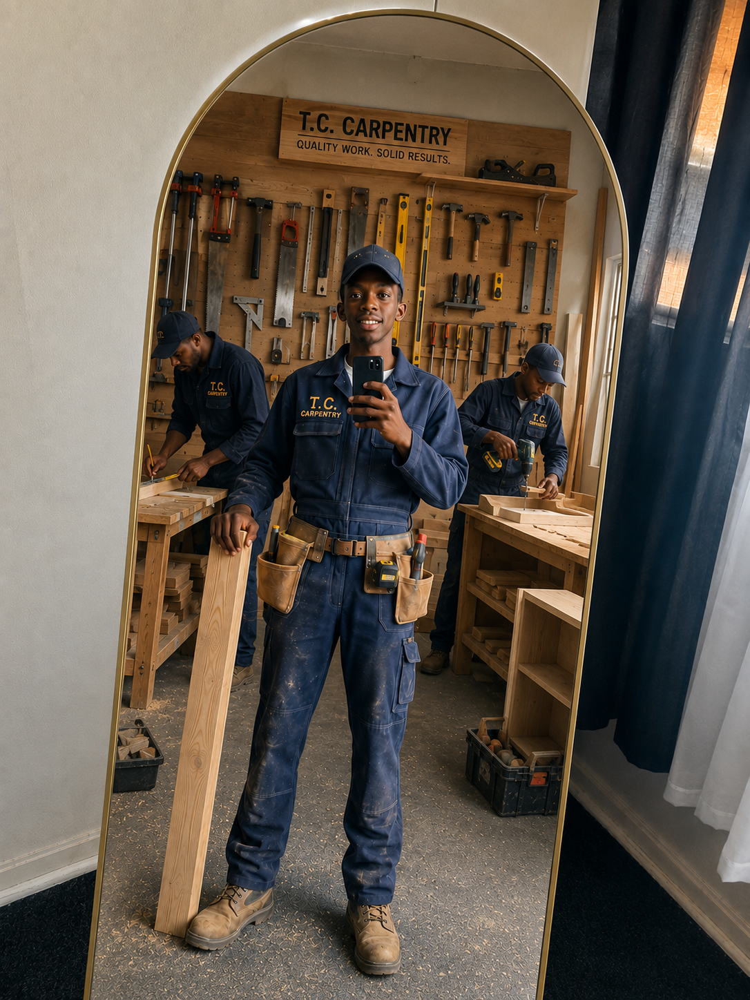

Our Story

T.C. Carpentry started as a small family workshop in Sandton, Gauteng, and grew into a trusted local carpentry business built on decades of hands on craftsmanship. Every project Big or Small it is approached with the same care and attention to detail that the business was founded on.
Mission & Vision
To deliver durable, well made carpentry from custom furniture to structural work with honesty and precision in every project.
To become Gauteng's most trusted name in carpentry, known for quality workmanship and friendly, reliable service.
Our Team
Founder & Master Carpenter
Leads every project with decades of hands on carpentry experience.
Site Manager
Oversees on site installs and makes sure every job runs on schedule.
Account Manager
Your first point of contact for quotes, questions, and updates.
Ready to start? Request a quote or contact us.